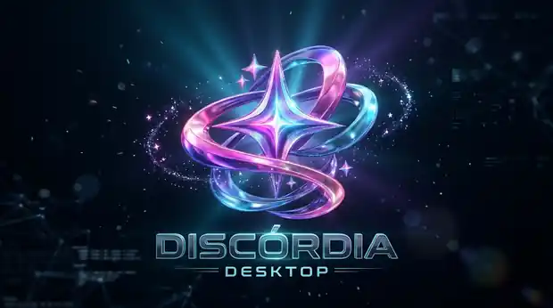

01 / VOZ E PRESENÇA
Entrou na sala?
A conversa continua.
Salas de voz para reunir a galera, acompanhar quem está online e conversar sem perder o ritmo do jogo.
Encontre seus amigos, crie seu espaço, converse durante a partida e compartilhe seus melhores momentos. Um lugar para jogar e estar junto.
Conheça o projeto independente e sua campanha de apoio
Um lugar feito para os momentos que acontecem antes, durante e depois da partida.
Salas de voz para reunir a galera, acompanhar quem está online e conversar sem perder o ritmo do jogo.
Mostre o jogo, uma janela ou seu monitor. Controle a qualidade e o áudio conforme o que deseja transmitir.
Organize canais, amizades e salas para manter a comunidade reunida no seu próprio espaço.
Experimente temas e deixe seu Discórdia com as cores e o clima que combinam com você.
Amigos, conversas diretas, perfis e presença para acompanhar a galera dentro e fora das partidas.
O Snake com placar global dá mais um motivo para desafiar os amigos.
O Discórdia nasceu das conversas entre amigos. Sua contribuição voluntária pode ajudar a manter a infraestrutura, cuidar da estabilidade e abrir espaço para novas ideias.
Uma interface para navegar entre amizades, conversar no Palco, assistir a transmissões e encontrar os controles sem perder o foco.
Câmera, transmissão e participantes em um espaço organizado.
Microfone, áudio e acesso às conversas sem sair da experiência.
Do tema discreto ao universo colorido, personalize a aparência.

Instale ou execute a versão portátil no Windows.
Entre na sua comunidade ou comece uma conversa.
Converse, jogue e compartilhe o que está acontecendo.
P2P, TURN e SFU ajudam o Discórdia a conectar pessoas e distribuir transmissões conforme a rede e a sessão. Explore como cada caminho funciona.
Se a rede permite, o seu Discórdia envia a mídia diretamente para o aplicativo do amigo, que recebe e reproduz.
O dispositivo tenta estabelecer uma conexão direta com o outro participante. Quando viável, os dados da chamada seguem diretamente entre eles.
Quando restrições de NAT ou firewall impedem uma ligação direta, um relay TURN pode encaminhar o tráfego entre os participantes.
Em transmissões de vídeo compatíveis, o SFU recebe um fluxo e o encaminha aos espectadores autorizados, sem exigir um envio separado para cada pessoa.
Demonstração educativa da arquitetura já existente, não um monitor de conexão em tempo real. No Discórdia, a voz da chamada utiliza sua própria rota P2P/TURN; o SFU se aplica ao vídeo nas situações habilitadas. A disponibilidade e a qualidade dependem da rede, permissões, versão instalada e infraestrutura ativa.
O VeloSinc é uma arquitetura em desenvolvimento para aproximar a experiência de quem transmite e de quem assiste. A proposta acompanha não só os quadros enviados, mas também os recebidos, decodificados e efetivamente exibidos — antes de sugerir uma recuperação.
Quem assiste pode receber quadros e ainda assim não conseguir exibi-los. O VeloSinc foi planejado para distinguir perda de rede, lentidão na decodificação e lentidão de exibição no computador receptor.
DESTINO · QUADROS EXIBIDOSO mecanismo proposto avalia uma rota alternativa apenas para quem está com dificuldade, sem obrigar os demais espectadores a trocar de caminho.
Escolher TURN ou SFU não significa que a conexão aconteceu. A rota precisa ser confirmada por ICE ou pelos quadros efetivamente apresentados.
A arquitetura prevê tratamento independente para voz e áudio da transmissão. Uso de SFU para áudio é uma possibilidade futura, ainda não implementada.
Transparência do projeto: a política VeloSinc e os testes de decisões estão preparados no repositório privado, mas o motor ainda não está conectado ao processamento real das transmissões. A implementação e a homologação em Windows 10/11 permanecem pendentes. As rotas P2P, TURN e SFU de vídeo já existentes continuam sendo explicadas na seção anterior.
O desenvolvimento do Discórdia reuniu melhorias em chamadas, captura, desempenho, segurança e personalização. O histórico permanece aqui mesmo após a retirada das versões de teste.
P2P, TURN e SFU, com voz independente do vídeo e diagnósticos de rota.
Captura de jogos e janelas, SmartStream, áudio seletivo e recuperação do player.
Palco redesenhado, presença refinada, atualizador e Estúdio de Temas.
Resumo histórico baseado nas notas oficiais. A presença no histórico não indica que uma versão RC ainda esteja disponível para download.
Fundos imersivos, ícones temáticos e uma atmosfera própria para cada comunidade. Arte e interface conceituais; os recursos disponíveis dependem da versão instalada.
Atmosfera tática e verde militar.
Energia arcade e cores vibrantes.
Luz estelar, violeta e dourado.
Baixe diretamente do repositório oficial. Os downloads são liberados somente quando a Release oficial publica instalador, portátil, manifesto de atualização e somas SHA-256.
RC 1.0.3 RC5: corrigido o arquivo de configuração do atualizador dentro do instalador Windows. VeloSinc e áudio seletivo preservados. Versão de testes, não estável.
Consultando versão oficial…Arquivos da Release oficial; verifique as notas de versão e as somas SHA-256.A atualização 1.0.2 está temporariamente suspensa para correção de uma falha na atualização automática. A versão anterior segue no histórico oficial.
Atualização 1.0.2 temporariamente suspensaA versão 1.0.2 foi suspensa enquanto o atualizador automático é corrigido e homologado. Consulte a página oficial de versões antes de instalar.Tire suas dúvidas sobre a instalação, as versões e o funcionamento do aplicativo.
O Discórdia Desktop é distribuído para Windows 10 e 11 em computadores x64. Os requisitos podem variar conforme a captura de tela, a câmera e os recursos em uso.
O instalador adiciona o aplicativo ao computador; a edição portátil pode ser executada sem instalação tradicional. Confira as instruções da Release antes de utilizar.
É uma prévia próxima da versão final, ainda sujeita a alterações. Quando a edição estável estiver disponível, ela terá prioridade nos downloads, e os destaques das RCs permanecerão na seção Histórico.
Baixe pelos links deste site ou pelo GitHub Releases do projeto e compare o hash SHA-256 publicado. O Windows pode exibir aviso de editor não verificado em versões sem assinatura digital.
O VeloSinc está em evolução nas versões de testes. A disponibilidade de cada função depende da versão instalada e da homologação; a apresentação nesta página explica a arquitetura, não confirma todas as rotas como concluídas. Conheça o VeloSinc.
O P2P tenta a conexão direta; o TURN pode retransmitir quando ela não é possível; o SFU distribui vídeo para múltiplos espectadores em sessões compatíveis. Assista à explicação animada.
Consulte a página de privacidade antes de usar o serviço.
Descubra as novidades e acompanhe os próximos lançamentos pelos canais oficiais do projeto.